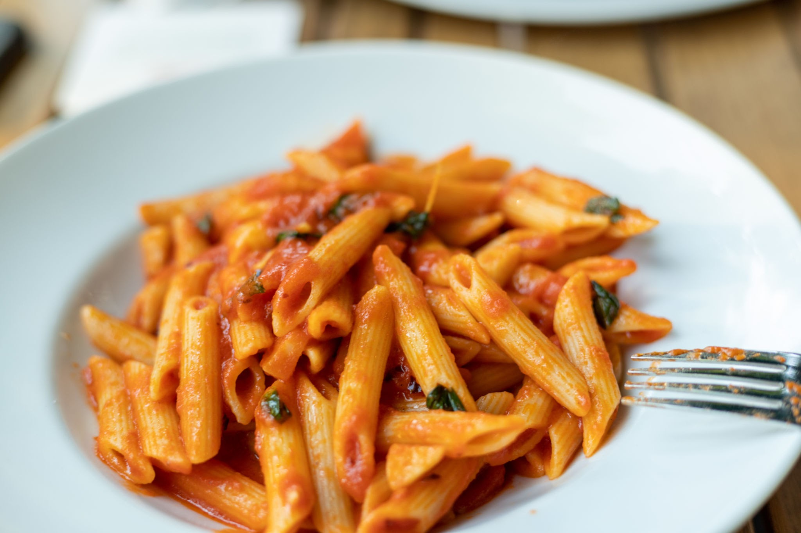

Penne

Description
Penne Arrabbiata is a vibrant, fiery staple of Roman cuisine. The name "arrabbiata" literally translates to "angry" in Italian, a playful nod to the punch of heat delivered by the crushed red pepper flakes infused into the sauce.
Ingredients
- 1 lb (450g) penne pasta (preferably penne rigate with ridges)
- 3 tablespoons extra-virgin olive oil
- 4 cloves garlic, thinly sliced
- 1 teaspoon crushed red pepper flakes (adjust to your heat preference)
- 1 can (28 oz) whole peeled San Marzano tomatoes, crushed by hand or finely chopped
- 1/4 cup fresh parsley, finely chopped
- Kosher salt and freshly ground black pepper, to taste
- Grated Pecorino Romano or Parmesan cheese (optional, for serving)
Steps
- Bring a large pot of heavily salted water to a boil. Add the penne and cook according to the package instructions until it is al dente.
- While the water is heating up or the pasta is cooking, place a large skillet over medium heat and add the olive oil.
- Add the thinly sliced garlic and crushed red pepper flakes to the skillet. Sauté gently for 1 to 2 minutes until the garlic is fragrant and just barely starting to turn golden. Do not let the garlic brown, or it will turn bitter.
- Carefully pour the hand-crushed tomatoes (and their juices) into the skillet. Season with salt and black pepper. Bring the sauce to a gentle simmer, reduce the heat to low, and let it cook for 10 to 15 minutes to allow the flavors to meld and the sauce to thicken slightly.
- Reserve about 1/2 cup of the starchy pasta water, then drain the penne.
- Transfer the cooked pasta directly into the skillet with the spicy tomato sauce. Toss vigorously to ensure every piece of penne is coated in the sauce. If the sauce feels too thick, splash in a little of the reserved pasta water.
- Stir in the chopped fresh parsley, remove from the heat, and serve immediately with a dusting of grated cheese if desired.